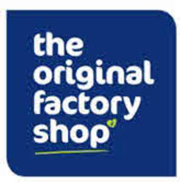

Trade Mark Journal No.2025/040 3 October 2025
UK00004183032 2 April 2025 (35)
Mark 1
Mark 2
Mark 3

- Class 35
- Retail and online retail services of non-medicated cosmetics and toiletry preparations, non-medicated dentifrices, perfumery, essential oils, bleaching preparations and other substances for laundry use, cleaning, polishing and abrasive preparations, after-shave lotions, air fragrance reed diffusers, air fragrance preparations, antiperspirants [toiletries], aromatics [essential oils], bath bombs, bath preparations (not for medical purposes), bath salts (not for medical purposes), beauty masks, cosmetic creams, cosmetic dyes, cosmetic pencils, cosmetic preparations for skin care, deodorants for human beings or for animals, depilatory preparations, eau de Cologne, eyebrow cosmetics, eyebrow pencils, false eyelashes, false nails, hair conditioners, hair dyes, hair lotions, hair spray, incense, lipstick cases, lipsticks, lotions for cosmetic purposes, make-up, make-up preparations, make-up removing preparations, mascara, massage gels (other than for medical purposes), nail care preparations, perfumes, potpourris [fragrances], sachets for perfuming linen, shampoos, shaving preparations, soap, sun-tanning preparations [cosmetics], sunscreen preparations, toiletry preparations; Retail and online retail services of transportable buildings of metal, non-electric cables and wires of common metal, small items of metal hardware, metal containers for storage or transport, building materials of metal, construction materials of metal, building panels of metal, buildings of metal, containers of metal [storage, transport], flagpoles [structures] of metal, greenhouse frames of metal, transportable greenhouses of metal, hand-held flagpoles of metal, horticultural frames of metal, memorial plaques of metal, mouldings of metal for building, mounting frames of metal for solar panels, nameplates of metal, outdoor blinds of metal, porches [structures] of metal, prefabricated houses [ready-to-assemble] of metal, signboards of metal, stakes of metal for plants or trees, statues of common metal, steel buildings, swimming pools [structures] of metal, weather vanes of metal, wind vanes of metal, wind-driven bird-repelling devices made of metal; Retail and online retail services of scientific, research, navigation, surveying, photographic, cinematographic, audiovisual, optical, weighing, measuring, signalling, detecting, testing, inspecting, life-saving and teaching apparatus and instruments, apparatus and instruments for conducting, switching, transforming, accumulating, regulating or controlling the distribution or use of electricity, apparatus and instruments for recording, transmitting, reproducing or processing sound, images or data, recorded and downloadable media, computer software, blank digital or analogue recording and storage media, mechanisms for coin-operated apparatus, cash registers, calculating devices, computers and computer peripheral devices, diving suits, divers' masks, ear plugs for divers, nose clips for divers and swimmers, gloves for divers, breathing apparatus for underwater swimming, fire-extinguishing apparatus, audio interfaces, audio mixers, audio- and video-receivers, camcorders, cameras [photography], compact disc players, downloadable computer game software, recorded computer game software, computer hardware, computer memory devices, computer peripheral devices. Downloadable computer programs, recorded or downloadable computer screen saver software, downloadable computer software applications, recorded or downloadable computer software platforms, recorded computer software, computers, digital photo frames, DVD players, electronic agendas, electronic book readers, electronic storage media, electronic tags for goods, encoded key cards, encoded magnetic cards, equalisers [audio apparatus], eyewear, hands-free kits for telephones, headphones, headsets, heat regulating apparatus, lanyards for mobile telephones, laptop computers, loudspeakers, magnetic data media, measuring instruments, mobile telephones, portable media players, portable power chargers, portable speakers record players, scales, scanners for data processing, screen protectors for mobile telephones, screens [photography], selfie sticks, smartphones, smartwatches, sound recording apparatus, sound recording carriers, sound reproduction apparatus, sound transmitting apparatus, spectacle cases, eyeglass cases, spectacle chains, eyeglass chains, spectacle cords, eyeglass cords, spectacle frames, eyeglass frames, spectacles, eyeglasses, sunglasses, tablet computers, tape recorders, television apparatus, USB flash drives, video screens, application software, mobile applications, software applications, electronic scratch cards; Retail and online retail services of apparatus and installations for lighting, heating, cooling, steam generating, cooking, drying, ventilating, water supply and sanitary purposes, air cooling apparatus, air deodorising apparatus, air dryers, air filtering installations, air fryers, air purifying apparatus and machines, air reheaters, air sterilisers, air-conditioning apparatus, air-conditioning installations, bed warmers, beverage cooling apparatus, electric blankets (not for medical purposes), bread baking machines, toasters, burners, candle lanterns, ceiling lights, central heating radiators, chandeliers, Chinese lanterns, electric coffee machines, electric coffee percolators, coffee roasters, electric coffeepots, cooking apparatus and installations, electric cooking pots, cooking stoves, cookers, electric cooking utensils, electric coolers, cooling appliances and installations, cooling installations and machines, electric deep fryers, dehumidifiers, drying apparatus and installations, electric cooktops, electric fans for personal use, electric lamps, electric torches, electrically heated carpets, facial saunas, fairy lights for festive decoration, fans [air-conditioning], electric food steamers, freezers, gas lamps, heating apparatus, heating elements, heating installations, hot water bottles, humidifiers, humidifiers for central heating radiators, electric kettles, lamps, lampshade holders, lampshades, light diffusers, light-emitting diode [LED] light bulbs, light-emitting diodes [LED] lighting apparatus, lighting apparatus and installations, electric lights for Christmas trees, microwave ovens [cooking apparatus], multicookers, oil burners, oil lamps, ornamental fountains, radiators [heating], electric radiators, refrigerating apparatus and machines, refrigerating appliances and installations, sterilisers, electric waffle irons, warming pans, water filtering apparatus, water purifying apparatus and machines; Retail and online retail services of precious metals and their alloys, jewellery, precious and semi-precious stones, horological and chronometric instruments, alarm clocks, amulets [jewellery], badges of precious metal, boxes of precious metal, bracelets [jewellery], bracelets made of embroidered textile [jewellery], brooches [jewellery], busts of precious metal, chains [jewellery], charms for key rings, charms for key chains, chronometric instruments, clasps for jewellery, clocks, commemorative statuary cups of precious metal, cuff links, earrings, figurines of precious metal, gold thread [jewellery], hat jewellery, jewellery boxes, jewellery charms, key rings, key chains, lanyards for keys, lockets [jewellery], medals, necklaces [jewellery], ornamental pins, pins [jewellery], presentation boxes for jewellery, presentation boxes for watches, rings [jewellery], semi-precious stones, sew-on tags of precious metal for clothing, shoe jewellery, silver thread [jewellery], statues of precious metal, tie clips, tie pins, watch bands, straps for wristwatches, watch straps, watch cases, watch chains, watches, works of art of precious metal, wristwatches; Retail and online retail services of luggage and carrying bags, umbrellas and parasols, walking sticks, whips, harness and saddlery, collars, leashes and clothing for animals, adhesive tags of leather for bags, attaché cases, backpacks for carrying infants, bags [envelopes, pouches] of leather, for packaging, bags, bags for campers, bags for climbers, bags for sports, beach bags, briefcases, business card cases, card cases, conference folders, conference portfolios, credit card cases [wallets], furniture coverings of leather, game bags [hunting accessories], garment bags for travel, handbags, haversacks, key cases, luggage tags, baggage tags, music cases, net bags for shopping, parasols, pocket wallets, pouch baby carriers, purses, reusable shopping bags, rucksacks, backpacks, school bags, school satchels, sew-on tags of leather for clothing, leather shoulder straps, sling bags for carrying infants, slings for carrying infants, smart suitcases, suitcase packing organizers, luggage organizers, suitcases, toilet bags, not fitted, travelling bags, travelling sets [leatherware], trunks [luggage], umbrella covers, umbrellas, valises, vanity cases, not fitted, walking sticks, canes, wallet chains, wheeled shopping bags; Retail and online retail services of transportable buildings (not of metal), monuments (not of metal), accordion doors (not of metal) bird baths [structures] (not of metal), building panels (not of metal), building stone, building timber, buildings (not of metal), buildings, transportable (not of metal), chicken-houses (not of metal), figurines of stone, concrete or marble, statuettes of stone, concrete or marble, flagpoles [structures] (not of metal), folding doors (not of metal), gates (not of metal), greenhouse frames (not of metal), transportable greenhouses, (not of metal), insect screens (not of metal), memorial plaques (not of metal), monuments (not of metal), outdoor blinds (not of metal and not of textile), porches [structures] (not of metal), prefabricated houses [ready-to-assemble] (not of metal), statues of stone, concrete or marble, swing doors (not of metal), works of art of stone, concrete or marble, modular greenhouses (not of metal), transportable greenhouses (not of metal), pre-fabricated greenhouses (not of metal); Retail and online retail services of furniture, mirrors, picture frames, containers for storage or transport (not of metal), unworked or semi-worked bone, horn, whalebone or mother-of-pearl, shells, meerschaum, yellow amber, air beds (not for medical purposes), air cushions(not for medical purposes), air mattresses (not for medical purposes), air pillows (not for medical purposes), anti-roll cushions for babies, armchairs, bakers' bread baskets, bamboo curtains, baskets (not of metal), bassinets, cradles, bath pillows, bathroom stools, bathroom vanities [furniture], bead curtains for decoration, bed bases, bed fittings (not of metal), bedding, except linen, beds, benches [furniture], birdhouses, book rests [furniture], bookcases, bottle racks, boxes of wood or plastic, camping mattresses, chairs [seats], chaise longues, chests for toys, chests of drawers, coat hangers, clothes hangers, coat stands, commemorative statuary cups of wood, wax, plaster or plastic, covers for clothing [wardrobe], crates, cupboards, curtain hooks, curtain rails, curtain rings, curtain rods, cushions, deck chairs, desks, dressing tables, figurines of wood, wax, plaster or plastic, statuettes of wood, wax, plaster or plastic, flower-pot pedestals, flower-stands [furniture], footstools, furniture shelves, garment covers [storage], hand-held mirrors [toilet mirrors], jewellery organizer displays, kitchen dressers [furniture], magazine racks, mattresses, mirrors [looking glasses], picture frames, pillows, placards of wood or plastics, racks [furniture], sideboards, sofas, statues of wood, wax, plaster or plastic, stools, tables, wardrobes, work benches, writing desks; Retail and online retail services of household or kitchen utensils and containers, cookware and tableware (except forks, knives and spoons), combs and sponges, brushes (except paintbrushes), brush-making materials, articles for cleaning purposes, unworked or semi-worked glass (except building glass), glassware, porcelain and earthenware, aromatic oil diffusers (other than reed diffusers), electric and non-electric, baskets for household purposes, non-electric beaters, beer mugs, non-electric beverage urns, bird baths, birdcages, non-electric blenders for household purposes, electric and non-electric bottle openers, bottles, bowls [basins], boxes for sweets, boxes of glass, bread baskets for household purposes, bread bins, busts of porcelain, ceramic, earthenware, terra-cotta or glass, cake moulds, cake stands, candlesticks, candle holders, candle jars [holders], electric and non-electric candle warmers, china ornaments, coasters (not of paper or textile), non-electric cocktail shakers; coffee filters, hand-operated coffee grinders, non-electric coffee percolators, coffee services [tableware], non-electric coffeepots, commemorative statuary cups of porcelain, ceramic, earthenware, terra-cotta or glass, containers for household or kitchen use, cookie jars, non-electric cooking pots, non-electric cooking utensils, cruets, crystal [glassware], cups, cups of paper or plastic, decanters, non-electric deep fryers, dish covers / covers for dishes, dish drying racks, dishcloths, dishes, drinking bottles for sports, drinking glasses, drinking vessels, dustbins for household purposes, earthenware, crockery, figurines of porcelain, ceramic, earthenware, terra-cotta or glass, statuettes of porcelain, ceramic, earthenware, terra-cotta or glass, flasks, flower pots, food steamers, non-electric, fruit bowls, glasses [receptacles], graters for kitchen use, grills [cooking utensils], griddles [cooking utensils], heat-insulated containers, hip flasks, holders for flowers and plants [flower arranging], non-electric hot pots, ice buckets, ice pails, ironing boards, jugs, pitchers, non-electric kettles, kitchen containers, non-electric kitchen grinders, kitchen utensils, lunch boxes, make-up brushes, mugs, electric and non-electric perfume burners, perfume sprayers, porcelain ware, pots, pottery, soap dispensing bottles, dishes for soaps, statues of porcelain, ceramic, earthenware, terra-cotta or glass, tea caddies, tea cosies, tea infusers, tea services [tableware], teapots, toilet cases, towel rails and rings, trays for household purposes, vases, non-electric waffle irons, waste paper baskets, non-electric whisks for household purposes, works of art of porcelain, ceramic, earthenware, terra-cotta or glass; Retail and online retail services of textiles and substitutes for textiles, household linen, curtains of textile or plastic, banners of textile or plastic, bath linen (except clothing), bath mitts, bed blankets, bed covers, bedspreads, quilts, bed linen, bedsheets, bunting of textile or plastic, cotton fabrics, loose covers for furniture, covers for cushions, fabric, face towels of textile, flannel [fabric], coverings of plastic for furniture, furniture coverings of textile, handkerchiefs of textile, knitted fabric, net curtains, picnic blankets, pillowcases, shower curtains of textile or plastic, sleeping bags, table linen (not of paper), table napkins of textile, table runners (not of paper), tablecloths (not of paper), tablemats of textile, tea towels, dish towels, textile material, upholstery fabrics, wall hangings of textile; Retail and online retail services of clothing, footwear, headwear, adhesive bras, ankle boots, aprons [clothing], babies' pants [underwear], bandanas [neckerchiefs], bath robes, bath sandals, bath slippers, bathing caps, swimsuits, bathing trunks, beach clothes, beach shoes, belts [clothing], bibs, not of paper, boas [necklets], bodices [lingerie], boots, boxer shorts, brassieres, camisoles, caps being headwear, clothing for gymnastics, clothing of leather, coats, corsets [underclothing], wristbands [clothing], cyclists' clothing, dresses, dressing gowns, ear muffs [clothing], espadrilles, face coverings [clothing], not for medical or sanitary purposes, football shoes, gloves [clothing], gymnastic shoes, hats, headbands [clothing], headscarves, hoods [clothing], hosiery, jackets [clothing], jerseys [clothing], jumpers’ jumper dresses, pinafore dresses, knitwear [clothing], layettes [clothing], leggings [leg warmers], leggings [trousers], mittens, money belts [clothing], motorists' clothing, outer clothing, overalls, overcoats, parkas, pyjamas, sandals, scarves, shawls, shirts, shoes, skirts, sleep masks. Slippers, socks, sports jerseys, Advertising, business management, organization and administration, office functions, loyalty, incentive and bonus program services, loyalty scheme services, administration of customer loyalty and incentive schemes, organisation and management of customer loyalty programs; Retail and online retail services of non-medicated cosmetics and toiletry preparations, non-medicated dentifrices, perfumery, essential oils, bleaching preparations and other substances for laundry use, cleaning, polishing and abrasive preparations, after-shave lotions, air fragrance reed diffusers, air fragrance preparations, antiperspirants [toiletries], aromatics [essential oils], bath bombs, bath preparations (not for medical purposes), bath salts (not for medical purposes), beauty masks, cosmetic creams, cosmetic dyes, cosmetic pencils, cosmetic preparations for skin care, deodorants for human beings or for animals, depilatory preparations, eau de Cologne, eyebrow cosmetics, eyebrow pencils, false eyelashes, false nails, hair conditioners, hair dyes, hair lotions, hair spray, incense, lipstick cases, lipsticks, lotions for cosmetic purposes, make-up, make-up preparations, make-up removing preparations, mascara, massage gels (other than for medical purposes), nail care preparations, perfumes, potpourris [fragrances], sachets for perfuming linen, shampoos, shaving preparations, soap, sun-tanning preparations [cosmetics], sunscreen preparations, toiletry preparations; Retail and online retail services of transportable buildings of metal, non-electric cables and wires of common metal, small items of metal hardware, metal containers for storage or transport, building materials of metal, construction materials of metal, building panels of metal, buildings of metal, containers of metal [storage, transport], flagpoles [structures] of metal, greenhouse frames of metal, transportable greenhouses of metal, hand-held flagpoles of metal, horticultural frames of metal, memorial plaques of metal, mouldings of metal for building, mounting frames of metal for solar panels, nameplates of metal, outdoor blinds of metal, porches [structures] of metal, prefabricated houses [ready-to-assemble] of metal, signboards of metal, stakes of metal for plants or trees, statues of common metal, steel buildings, swimming pools [structures] of metal, weather vanes of metal, wind vanes of metal, wind-driven bird-repelling devices made of metal; Retail and online retail services of scientific, research, navigation, surveying, photographic, cinematographic, audiovisual, optical, weighing, measuring, signalling, detecting, testing, inspecting, life-saving and teaching apparatus and instruments, apparatus and instruments for conducting, switching, transforming, accumulating, regulating or controlling the distribution or use of electricity, apparatus and instruments for recording, transmitting, reproducing or processing sound, images or data, recorded and downloadable media, computer software, blank digital or analogue recording and storage media, mechanisms for coin-operated apparatus, cash registers, calculating devices, computers and computer peripheral devices, diving suits, divers' masks, ear plugs for divers, nose clips for divers and swimmers, gloves for divers, breathing apparatus for underwater swimming, fire-extinguishing apparatus, audio interfaces, audio mixers, audio- and video-receivers, camcorders, cameras [photography], compact disc players, downloadable computer game software, recorded computer game software, computer hardware, computer memory devices, computer peripheral devices. Downloadable computer programs, recorded or downloadable computer screen saver software, downloadable computer software applications, recorded or downloadable computer software platforms, recorded computer software, computers, digital photo frames, DVD players, electronic agendas, electronic book readers, electronic storage media, electronic tags for goods, encoded key cards, encoded magnetic cards, equalisers [audio apparatus], eyewear, hands-free kits for telephones, headphones, headsets, heat regulating apparatus, lanyards for mobile telephones, laptop computers, loudspeakers, magnetic data media, measuring instruments, mobile telephones, portable media players, portable power chargers, portable speakers record players, scales, scanners for data processing, screen protectors for mobile telephones, screens [photography], selfie sticks, smartphones, smartwatches, sound recording apparatus, sound recording carriers, sound reproduction apparatus, sound transmitting apparatus, spectacle cases, eyeglass cases, spectacle chains, eyeglass chains, spectacle cords, eyeglass cords, spectacle frames, eyeglass frames, spectacles, eyeglasses, sunglasses, tablet computers, tape recorders, television apparatus, USB flash drives, video screens, application software, mobile applications, software applications, electronic scratch cards; Retail and online retail services of apparatus and installations for lighting, heating, cooling, steam generating, cooking, drying, ventilating, water supply and sanitary purposes, air cooling apparatus, air deodorising apparatus, air dryers, air filtering installations, air fryers, air purifying apparatus and machines, air reheaters, air sterilisers, air-conditioning apparatus, air-conditioning installations, bed warmers, beverage cooling apparatus, electric blankets (not for medical purposes), bread baking machines, toasters, burners, candle lanterns, ceiling lights, central heating radiators, chandeliers, Chinese lanterns, electric coffee machines, electric coffee percolators, coffee roasters, electric coffeepots, cooking apparatus and installations, electric cooking pots, cooking stoves, cookers, electric cooking utensils, electric coolers, cooling appliances and installations, cooling installations and machines, electric deep fryers, dehumidifiers, drying apparatus and installations, electric cooktops, electric fans for personal use, electric lamps, electric torches, electrically heated carpets, facial saunas, fairy lights for festive decoration, fans [air-conditioning], electric food steamers, freezers, gas lamps, heating apparatus, heating elements, heating installations, hot water bottles, humidifiers, humidifiers for central heating radiators, electric kettles, lamps, lampshade holders, lampshades, light diffusers, light-emitting diode [LED] light bulbs, light-emitting diodes [LED] lighting apparatus, lighting apparatus and installations, electric lights for Christmas trees, microwave ovens [cooking apparatus], multicookers, oil burners, oil lamps, ornamental fountains, radiators [heating], electric radiators, refrigerating apparatus and machines, refrigerating appliances and installations, sterilisers, electric waffle irons, warming pans, water filtering apparatus, water purifying apparatus and machines; Retail and online retail services of precious metals and their alloys, jewellery, precious and semi-precious stones, horological and chronometric instruments, alarm clocks, amulets [jewellery], badges of precious metal, boxes of precious metal, bracelets [jewellery], bracelets made of embroidered textile [jewellery], brooches [jewellery], busts of precious metal, chains [jewellery], charms for key rings, charms for key chains, chronometric instruments, clasps for jewellery, clocks, commemorative statuary cups of precious metal, cuff links, earrings, figurines of precious metal, gold thread [jewellery], hat jewellery, jewellery boxes, jewellery charms, key rings, key chains, lanyards for keys, lockets [jewellery], medals, necklaces [jewellery], ornamental pins, pins [jewellery], presentation boxes for jewellery, presentation boxes for watches, rings [jewellery], semi-precious stones, sew-on tags of precious metal for clothing, shoe jewellery, silver thread [jewellery], statues of precious metal, tie clips, tie pins, watch bands, straps for wristwatches, watch straps, watch cases, watch chains, watches, works of art of precious metal, wristwatches; Retail and online retail services of luggage and carrying bags, umbrellas and parasols, walking sticks, whips, harness and saddlery, collars, leashes and clothing for animals, adhesive tags of leather for bags, attaché cases, backpacks for carrying infants, bags [envelopes, pouches] of leather, for packaging, bags, bags for campers, bags for climbers, bags for sports, beach bags, briefcases, business card cases, card cases, conference folders, conference portfolios, credit card cases [wallets], furniture coverings of leather, game bags [hunting accessories], garment bags for travel, handbags, haversacks, key cases, luggage tags, baggage tags, music cases, net bags for shopping, parasols, pocket wallets, pouch baby carriers, purses, reusable shopping bags, rucksacks, backpacks, school bags, school satchels, sew-on tags of leather for clothing, leather shoulder straps, sling bags for carrying infants, slings for carrying infants, smart suitcases, suitcase packing organizers, luggage organizers, suitcases, toilet bags, not fitted, travelling bags, travelling sets [leatherware], trunks [luggage], umbrella covers, umbrellas, valises, vanity cases, not fitted, walking sticks, canes, wallet chains, wheeled shopping bags; Retail and online retail services of transportable buildings (not of metal), monuments (not of metal), accordion doors (not of metal) bird baths [structures] (not of metal), building panels (not of metal), building stone, building timber, buildings (not of metal), buildings, transportable (not of metal), chicken-houses (not of metal), figurines of stone, concrete or marble, statuettes of stone, concrete or marble, flagpoles [structures] (not of metal), folding doors (not of metal), gates (not of metal), greenhouse frames (not of metal), transportable greenhouses, (not of metal), insect screens (not of metal), memorial plaques (not of metal), monuments (not of metal), outdoor blinds (not of metal and not of textile), porches [structures] (not of metal), prefabricated houses [ready-to-assemble] (not of metal), statues of stone, concrete or marble, swing doors (not of metal), works of art of stone, concrete or marble, modular greenhouses (not of metal), transportable greenhouses (not of metal), pre-fabricated greenhouses (not of metal); Retail and online retail services of furniture, mirrors, picture frames, containers for storage or transport (not of metal), unworked or semi-worked bone, horn, whalebone or mother-of-pearl, shells, meerschaum, yellow amber, air beds (not for medical purposes), air cushions(not for medical purposes), air mattresses (not for medical purposes), air pillows (not for medical purposes), anti-roll cushions for babies, armchairs, bakers' bread baskets, bamboo curtains, baskets (not of metal), bassinets, cradles, bath pillows, bathroom stools, bathroom vanities [furniture], bead curtains for decoration, bed bases, bed fittings (not of metal), bedding, except linen, beds, benches [furniture], birdhouses, book rests [furniture], bookcases, bottle racks, boxes of wood or plastic, camping mattresses, chairs [seats], chaise longues, chests for toys, chests of drawers, coat hangers, clothes hangers, coat stands, commemorative statuary cups of wood, wax, plaster or plastic, covers for clothing [wardrobe], crates, cupboards, curtain hooks, curtain rails, curtain rings, curtain rods, cushions, deck chairs, desks, dressing tables, figurines of wood, wax, plaster or plastic, statuettes of wood, wax, plaster or plastic, flower-pot pedestals, flower-stands [furniture], footstools, furniture shelves, garment covers [storage], hand-held mirrors [toilet mirrors], jewellery organizer displays, kitchen dressers [furniture], magazine racks, mattresses, mirrors [looking glasses], picture frames, pillows, placards of wood or plastics, racks [furniture], sideboards, sofas, statues of wood, wax, plaster or plastic, stools, tables, wardrobes, work benches, writing desks; Retail and online retail services of household or kitchen utensils and containers, cookware and tableware (except forks, knives and spoons), combs and sponges, brushes (except paintbrushes), brush-making materials, articles for cleaning purposes, unworked or semi-worked glass (except building glass), glassware, porcelain and earthenware, aromatic oil diffusers (other than reed diffusers), electric and non-electric, baskets for household purposes, non-electric beaters, beer mugs, non-electric beverage urns, bird baths, birdcages, non-electric blenders for household purposes, electric and non-electric bottle openers, bottles, bowls [basins], boxes for sweets, boxes of glass, bread baskets for household purposes, bread bins, busts of porcelain, ceramic, earthenware, terra-cotta or glass, cake moulds, cake stands, candlesticks, candle holders, candle jars [holders], electric and non-electric candle warmers, china ornaments, coasters (not of paper or textile), non-electric cocktail shakers; coffee filters, hand-operated coffee grinders, non-electric coffee percolators, coffee services [tableware], non-electric coffeepots, commemorative statuary cups of porcelain, ceramic, earthenware, terra-cotta or glass, containers for household or kitchen use, cookie jars, non-electric cooking pots, non-electric cooking utensils, cruets, crystal [glassware], cups, cups of paper or plastic, decanters, non-electric deep fryers, dish covers / covers for dishes, dish drying racks, dishcloths, dishes, drinking bottles for sports, drinking glasses, drinking vessels, dustbins for household purposes, earthenware, crockery, figurines of porcelain, ceramic, earthenware, terra-cotta or glass, statuettes of porcelain, ceramic, earthenware, terra-cotta or glass, flasks, flower pots, food steamers, non-electric, fruit bowls, glasses [receptacles], graters for kitchen use, grills [cooking utensils], griddles [cooking utensils], heat-insulated containers, hip flasks, holders for flowers and plants [flower arranging], non-electric hot pots, ice buckets, ice pails, ironing boards, jugs, pitchers, non-electric kettles, kitchen containers, non-electric kitchen grinders, kitchen utensils, lunch boxes, make-up brushes, mugs, electric and non-electric perfume burners, perfume sprayers, porcelain ware, pots, pottery, soap dispensing bottles, dishes for soaps, statues of porcelain, ceramic, earthenware, terra-cotta or glass, tea caddies, tea cosies, tea infusers, tea services [tableware], teapots, toilet cases, towel rails and rings, trays for household purposes, vases, non-electric waffle irons, waste paper baskets, non-electric whisks for household purposes, works of art of porcelain, ceramic, earthenware, terra-cotta or glass; Retail and online retail services of textiles and substitutes for textiles, household linen, curtains of textile or plastic, banners of textile or plastic, bath linen (except clothing), bath mitts, bed blankets, bed covers, bedspreads, quilts, bed linen, bedsheets, bunting of textile or plastic, cotton fabrics, loose covers for furniture, covers for cushions, fabric, face towels of textile, flannel [fabric], coverings of plastic for furniture, furniture coverings of textile, handkerchiefs of textile, knitted fabric, net curtains, picnic blankets, pillowcases, shower curtains of textile or plastic, sleeping bags, table linen (not of paper), table napkins of textile, table runners (not of paper), tablecloths (not of paper), tablemats of textile, tea towels, dish towels, textile material, upholstery fabrics, wall hangings of textile; Retail and online retail services of clothing, footwear, headwear, adhesive bras, ankle boots, aprons [clothing], babies' pants [underwear], bandanas [neckerchiefs], bath robes, bath sandals, bath slippers, bathing caps, swimsuits, bathing trunks, beach clothes, beach shoes, belts [clothing], bibs, not of paper, boas [necklets], bodices [lingerie], boots, boxer shorts, brassieres, camisoles, caps being headwear, clothing for gymnastics, clothing of leather, coats, corsets [underclothing], wristbands [clothing], cyclists' clothing, dresses, dressing gowns, ear muffs [clothing], espadrilles, face coverings [clothing], not for medical or sanitary purposes, football shoes, gloves [clothing], gymnastic shoes, hats, headbands [clothing], headscarves, hoods [clothing], hosiery, jackets [clothing], jerseys [clothing], jumpers’ jumper dresses, pinafore dresses, knitwear [clothing], layettes [clothing], leggings [leg warmers], leggings [trousers], mittens, money belts [clothing], motorists' clothing, outer clothing, overalls, overcoats, parkas, pyjamas, sandals, scarves, shawls, shirts, shoes, skirts, sleep masks. Slippers, socks, sports jerseys, sports shoes, stockings, suits, sweaters, teddies [underclothing], bodies [underclothing], tee-shirts, trousers, underwear, underclothing, veils [clothing], waistcoats, vests, waterproof clothing; Retail and online retail services of carpets, rugs, mats and matting, linoleum and other materials for covering existing floors, wall hangings (not of textile) bath mats, carpets, floor mats, gymnastic mats, linoleum floor coverings, linoleum tiles [floor coverings], mats, textile wallcoverings, textile wallpaper, vinyl floor covering, wallpaper, yoga mats; Retail and online retail services games, toys and playthings, video game apparatus, gymnastic and sporting articles, decorations for Christmas trees, action figures, amusement machines, automatic and coin-operated, apparatus for games, appliances for gymnastics, baby gyms, balls for games, board games, body-building apparatus, building blocks [toys], building games, card games, chess games, controllers for game consoles, controllers for toys, counters [discs] for games, cups for dice, darts, dice, checkerboards, checkers [games], drones [toys], educational games, exercise weights, fidget toys, games, hand-held consoles for playing video games, jigsaw puzzles, joysticks for video games, kites, mah-jong, marbles for games, masks [playthings], novelty toys for parties, novelty toys for playing jokes, ornaments for Christmas trees, except lights, candles and confectionery, paper party hats, party balloons, piñatas, play tents, playground sandboxes, playhouses for children, playing cards, plush toys, plush toys with attached comfort blanket, portable games and toys incorporating telecommunication functions, printed lottery tickets, punching bags, puppets. Marionettes, rackets, bats for games, rattles [playthings], remote-controlled toy vehicles, ring games, rocking horses, roller skates, scale model kits [toys], scale model vehicles, scooters [toys], scratch cards for playing lottery games, skateboards, smart toys, spinning toys, stuffed toys, swings, table-top games, tables for table tennis, targets, teddy bears, theatrical masks, toy air pistols, toy dough, toy figures, toy mobiles, toy models, toy musical instruments, toy pistols, toy robots, toy vehicles, toys for pets, trading card games, trampolines, tricycles for infants [toys], video game consoles, video game machines, lottery scratch cards, scratch cards for playing lottery games.
The mark is proceeding because of distinctiveness acquired through use.
MODELLA ACQUISITION CO 7 LIMITED
Representative: Pinsent Masons LLP